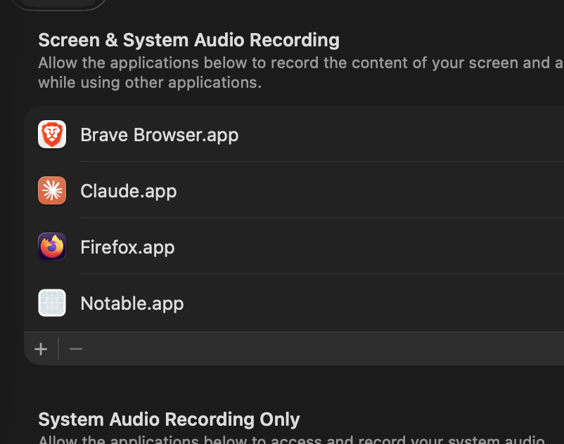

Capture and annotate
Region and window Selection, arrows, rectangles, text, pencil, Censor, stamps, highlighter, measure, spotlight, loupe, and eyedropper.
Native macOS Capture app
Capture, annotate, record, redact, and export from one quiet menu bar app. Built for fast local work, with no network AI calls.
Current local test build: macOS 13+, Apple Silicon and Intel.
Built for daily Capture work
Notable starts from the menu bar, freezes the display, lets you choose a Selection, and opens an Editor where every Annotation stays editable until you copy, save, or return to it from local history.
Region and window Selection, arrows, rectangles, text, pencil, Censor, stamps, highlighter, measure, spotlight, loupe, and eyedropper.
MP4 display recording, trim controls, GIF export, all-display Capture, scroll Capture, and PNG, JPEG, HEIC, or TIFF image output.
On-device Vision OCR, QR detection, face detection, and local sensitive-text or face Censoring without sending Capture data away.
Private by default
History, brand kits, OCR, face detection, redaction, adjustments, and export are local. Upload and sync are intentionally absent until a real backend, domain, and auth policy are configured.

Download
This is a development build for testing. Final branding, signing, notarization, and public release packaging still need to happen before broad distribution.